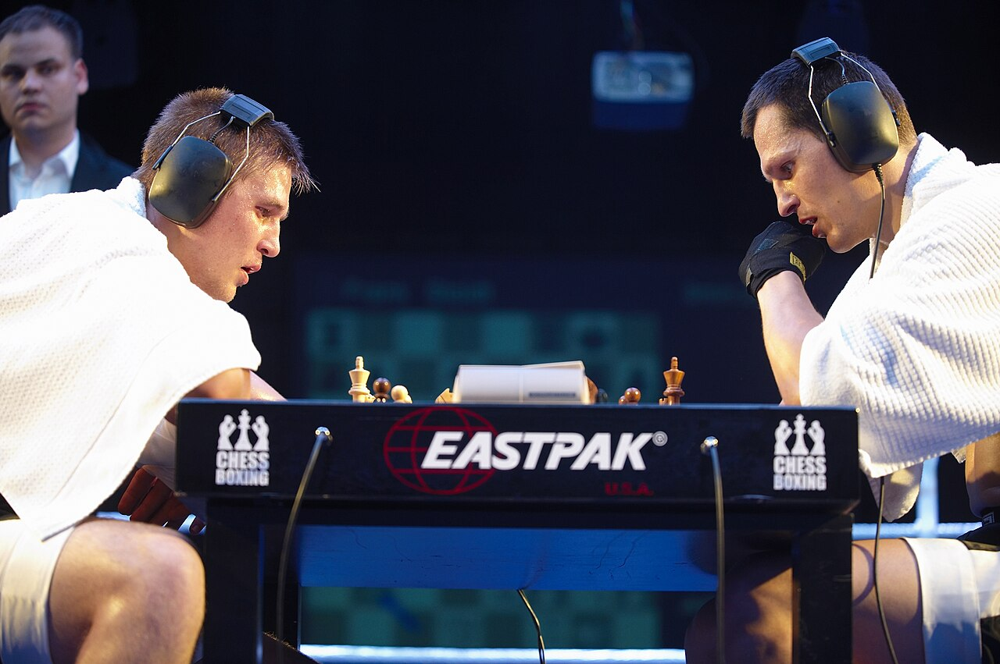

Maailmalla
Shakkinyrkkeilyä järjestetään useissa maissa, erityisesti Euroopassa. Laji on ollut näkyvillä muun muassa Saksassa, Venäjällä, Iso-Britanniassa ja Alankomaissa, joissa on järjestetty kansainvälisiä tapahtumia ja mestaruusotteluita.
Kilpailutoiminta on organisoitu kansainvälisten toimijoiden kautta, ja otteluita käydään sekä amatööri- että ammattilaistasolla. Lajin kansainvälinen yhteisö on tiivis ja tapahtumat järjestetään usein osana suurempia urheilu- tai kulttuuritapahtumia.
Lajin kansainvälistä kilpailutoimintaa on pitkään järjestänyt World Chess Boxing Organization (WCBO). Myöhemmin lajille on syntynyt myös muita kansainvälisiä organisaatioita kuten vuonna 2013 perustettu World Chess Boxing Association (WCBA), joka järjestää turnauksia ja maailmanmestaruusotteluita eri painoluokissa.
Kansainvälisesti tunnetuimpia ottelijoita ovat lajin kehittäjä, WCBO:n perustaja ja ensimmäinen maailmanmestari vuodelta 2003 Iepe Rubingh, nykyinen raskaansarjan maailmanmestari James Canty III, useita Euroopan mestaruuksia voittanut Frank Stoldt sekä useita titteleitä voittanut Nikolai Sazhin.
Suomessa
Suomessa shakkinyrkkeily on toistaiseksi pysynyt pienimuotoisena ilmiönä. Lajia on esitelty yksittäisissä tapahtumissa ja mediassa, mutta säännöllinen kotimainen kilpailutoiminta on ollut vähäistä.
Yksi tunnetuimmista suomalaisista lajin edustajista on entinen ammattinyrkkeilijä Sakari Lähderinne, joka voitti (WCBO) maailmanmestaruuden 75kg sarjassa vuosina 2018 ja 2019. Hänen saavutuksensa toi lajille pientä näkyvyyttä myös Suomessa ja osoitti, että suomalaiset kilpailijat voivat menestyä kansainvälisellä tasolla.
Lajin tulevaisuus Suomessa riippuu aktiivisten harrastajien, tapahtumajärjestäjien ja kansainvälisten yhteyksien kehityksestä.
